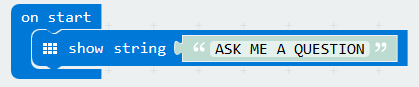
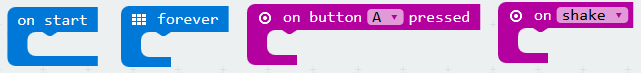
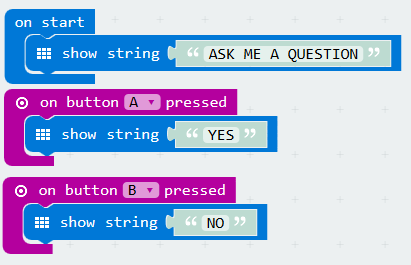

Micro:bit PXT - Beginner
Lesson 03 - Answering Machine
Intro
In this lesson, you will learn how to make the micro:bit display text on the LED screen, and how to use the buttons. You will create the project shown in the video below.
The micro:bit will display ASK ME A QUESTION, and will then display YES or NO depending on which button the user presses.
Code It
- Create a new project and drag out a
show stringblock, and set the argument (the string to be shown) as in the code sample below. - As the string (a programming term for text) is too long to fit on the LED matrix all at once, it scrolls across the display. 
- Remember to put the code inside an
on startblock.
Learn It
- Notice how in the previous lessons, our code has been contained in a
foreverblock. - Blocks like this are called listeners, as they are listening for an event.
- The following blocks are all listeners: 
- In this lesson, we have used an
on startblock, as we only want this section of code to run once, not forever.
Code It
- Listeners do not just have to be
on startorforever. They can 'listen' for physical events, such as pressing one of the micro:bit's two buttons, labelled A and B. - When button A is pressed, we want the micro:bit to display
YES. - When button B is pressed, we want the micro:bit to display
NO. - Add two
on button A pressedblocks. They can be found in the Input tab. - For one of these blocks, change the
AtoBusing the drop down menu. - Add
show stringblocks inside the new listeners, as per the instructions. Your finished code should look like this:

Save It
- Download your code into the directory setup in the previous lesson, and call the file:
microbit-lesson03a.hex
Test It
- Flash the code file onto the micro:bit.
- The micro:bit should behave as shown in the first video.
- Did your code work? If so, well done! If not, look through the code to find any mistakes. You can find a code listing above.
- Now move on to the challenges...
Challenges
- Challenge 1:
- Add a new listener to your code, so that when buttons A and B are pressed at the same time, the message
MAYBEis displayed on the screen. - HINT: Look in the drop down menu for the
on button A pressedblock. - Save your code with the following filename:
microbit-lesson03b.hex
Finish
Congratulations! You have now completed lesson 3. Go back to the Beginner index, and move on to the next lesson.